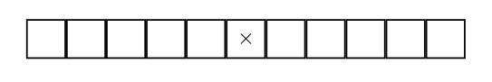
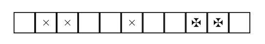

Exemplo 1.1.1.
Pedro e Mônica jogam em um tabuleiro \(1 \times 11\text{.}\) Cada um, em sua vez, pode pintar um dos quadrados (que não foram pintados anteriormente), ou dois quadrados consecutivos (se ambos estiverem brancos). Quem não puder mais jogar perde. Sabe-se que Pedro será o primeiro a jogar. Quem pode sempre garantir a vitória?
Solução.
Pedro sempre poderá ganhar se seguir a seguinte estratégia:
- Inicialmente, Pedro deve pintar o quadrado do meio.
Figura 1.1.2. -
Agora, depois que Mônica fizer sua jogada, Pedro deve jogar sempre simetricamente em relação ao centro do tabuleiro (i.e. sempre deixando o tabuleiro simétrico). Por exemplo, se Mônica jogar nas casas 9 e 10, Pedro deve jogar nas casas 2 e 3.
Figura 1.1.3. - Assim, Mônica nunca poderá ganhar, pois na sua jogada ela "quebra a simetria" e a configuração final do jogo todas as casas estarão pintadas, ou seja, a configuração é simétrica.